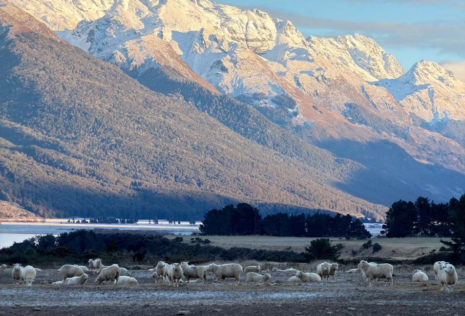

Merino wool: performance, naturally.
One fibre that works through an Australian summer and a New Zealand winter. Notes from the high country above Queenstown, and what that range does for a run.

We went to Queenstown to see the fibre at the far end of its range.
The same fleece has to work at both extremes. An Australian summer of thirty five degree heat and dry wind. A New Zealand winter below the snow line, through frost and southerly fronts. One fibre, no change of kit, and the animals wearing it are comfortable throughout.
A run is that problem compressed into an hour. You start cool, you heat up, you crest a hill into wind and cool again. Here is what merino does about it.
In a nutshell: Merino wool naturally helps regulate temperature, manage moisture, breathe and resist odour. Combined with a loose, free flowing fit, it creates a different kind of performance layer: soft against the body, unrestricted in movement and designed to let air move naturally.
Temperature regulation
Running can take you through constantly changing conditions. You start cool, your body heats up, you sweat, and the environment around you can change again.
Merino wool is naturally suited to these changes.
When you’re hot, your body produces moisture to cool itself. Merino can absorb moisture vapour into its fibres, helping manage the humidity created by your body. As that moisture moves through the fabric and evaporates, it helps carry heat away from your skin.
When you’re cold, merino’s naturally crimped fibres trap tiny pockets of air, helping retain warmth.
Our relaxed cut adds another element. Rather than sitting tightly against your body, the fabric falls naturally around you, creating space for air to move between your skin and the garment.
The result: natural temperature regulation combined with a loose, breathable silhouette that doesn’t cling to your body as you heat up.
Wool’s natural fibre structure, moisture absorption and insulating properties contribute to its thermoregulatory performance. Read the science →
Moisture management
Sweat is your body’s natural cooling system. The important part is what happens next.
For sweat to cool you, it needs to evaporate. When moisture builds up against your skin, you can start to feel wet, sticky and clammy.
Merino helps manage moisture at the fibre level. Its fibres can absorb water vapour, helping regulate humidity around your body. That moisture can then move through the fabric and evaporate into the surrounding air.
And because our tees aren’t designed to cling to your skin, there is room between your body and the fabric for air to circulate.
You’re not wrapped in a tight layer of fabric holding moisture against you. You’re wearing a soft, loose garment that allows your body to breathe and move naturally.
The result: less cling, less clamminess and a more comfortable environment as you heat up.
Wool can absorb significantly more moisture vapour than many common apparel fibres, helping regulate humidity next to the skin. Read the science →
Breathability
Breathability isn’t just about air passing through a fabric. It’s about allowing heat and moisture to move away from your body.
As you exercise, your body produces both. A breathable garment helps prevent heat and humidity from becoming trapped around you.
Merino’s natural fibre structure helps manage moisture vapour, while our loose silhouette gives that moisture and heat somewhere to go.
The relaxed fit means the fabric doesn’t constantly sit against your skin. As you move, air can circulate naturally through the space between your body and the garment.
The result: a lighter, freer feeling while you run, without the restrictive feeling of a close fitting performance tee.
Wool’s moisture vapour buffering properties contribute to its natural breathability. Read the science →
Softness
Performance shouldn’t mean sacrificing comfort.
Fine merino fibres are exceptionally soft against the body, without the scratchiness associated with traditional coarse wool.
Our relaxed tees take that softness a step further. Instead of compressing against your body, the fabric falls naturally around it, giving you freedom to move without feeling restricted.
No tight compression. No cling. No unnecessary structure.
Just soft, lightweight natural fibre that moves with you.
The result: a relaxed fit that feels as good at kilometre one as it does at kilometre twenty.
Natural odour resistance
Sweat itself isn’t what makes your running clothes smell.
Odour develops when moisture, sweat compounds and bacteria interact. The longer these remain in a garment, the more noticeable the smell can become.
Merino wool naturally helps manage this process.
Its fibres can absorb moisture and bind odour molecules within their structure, helping reduce the buildup of unwanted smells.
This is one of the reasons merino can be worn repeatedly between washes without developing the same level of odour as many synthetic fabrics.
The result: a fresher garment, longer wear between washes and less unnecessary washing.
Research has found that wool’s moisture management and ability to bind odour compounds contribute to its natural odour resistance. Read the science →
Performance, without the plastic
Performance clothing doesn’t have to be made from plastic.
Merino wool has been regulating temperature, managing moisture and protecting against the elements for thousands of years.
We believe the best performance technology doesn’t always need to be engineered in a laboratory.
Sometimes, nature got there first.
100% performance. Naturally.
Our merino is grown in Australia and our tees are knitted and made in Melbourne. The high country is simply where the fibre’s range is easiest to see.